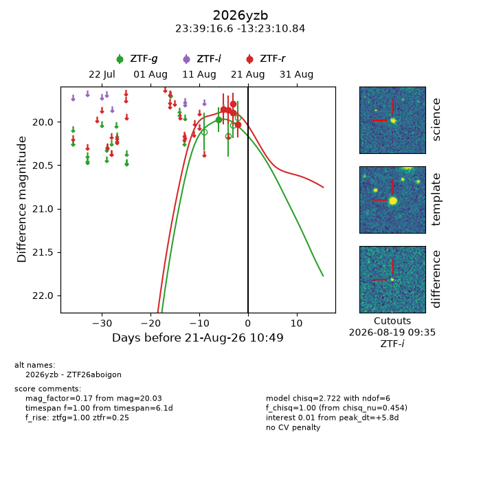
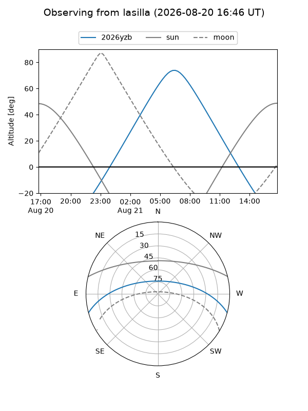
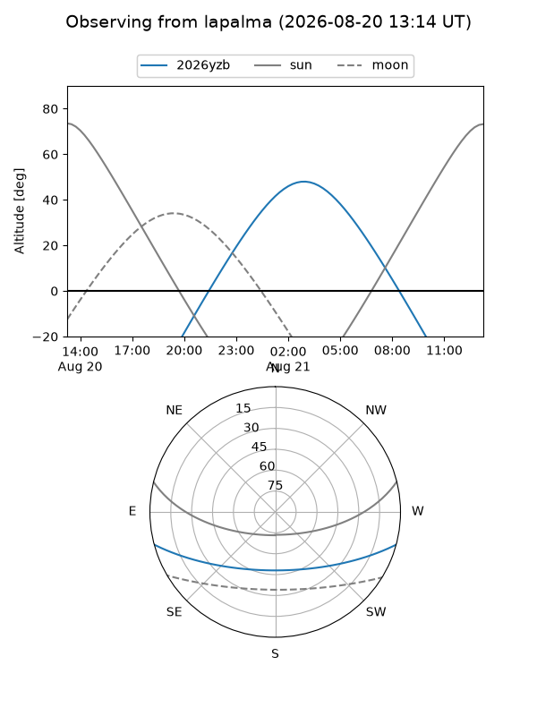
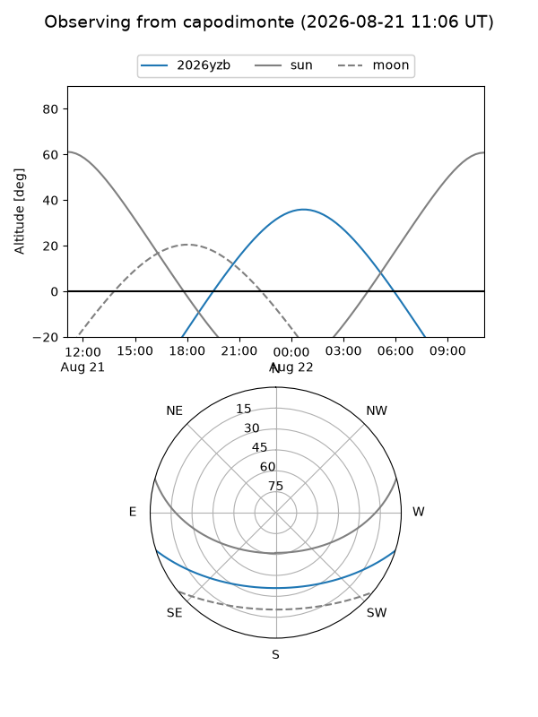
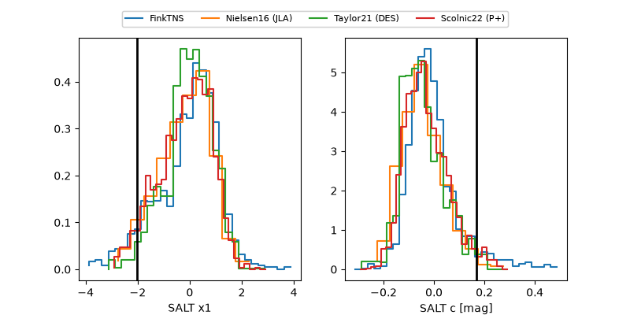

2026yzb
Target 2026yzb at 2026-08-21 10:51
Aliases and brokers:
FINK-ZTF: ztf.fink-portal.org/ZTF26aboigon
Lasair-ZTF: lasair-ztf.lsst.ac.uk/objects/ZTF26aboigon
ALeRCE-ZTF: alerce.online/object/ZTF26aboigon
YSE-PZ: ziggy.ucolick.org/yse/transient_detail/2026yzb
TNS name: wis-tns.org/object/2026yzb
Direct TNS query: direct search
alt names
ZTF26aboigon (ztf,fink_ztf)
2026yzb (tns,yse)
Coordinates:
equatorial (ra, dec) = 354.8194,-13.38635
equatorial (HMS+DMS) = 23:39:16.64,-13:23:10.84
galactic (l, b) = (68.5387,-68.25044)
Flags:
TNS type: nan
peak dt: +5.8
Photometry:
last ztfg=19.90, ztfr=20.03
2 ztfg, 5 ztfr detections
Lightcurve

Visibility



Additional plots
